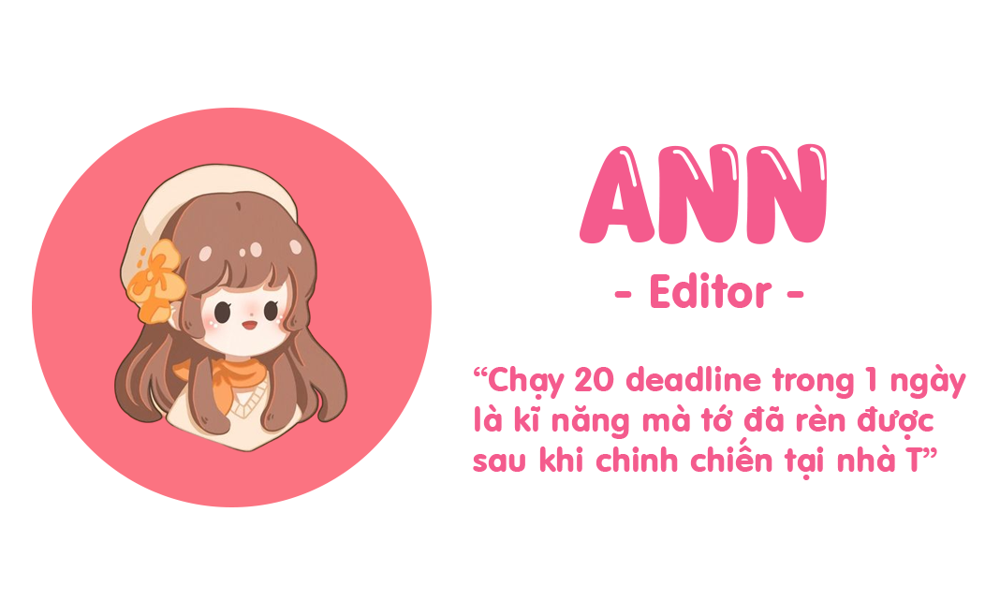
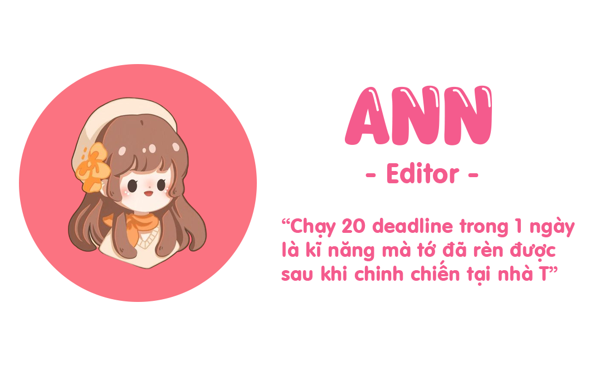

Giới Thiệu
Targaryen là nơi mà đội ngũ thành viên phát triển chia sẻ các thông tin, kinh nghiệm và cách chơi đối với tựa game Miracle Nikki (Ngôi Sao Thời Trang) tới với mọi người. Thông tin được chúng tớ cóp nhặt, tổng hợp cũng như tự rút ra từ nhiều nguồn cũng như các phiên bản khắp nơi nhằm đưa đến các bạn các thông tin đa dạng và chính xác nhất có thể.
Phiên Bản
Targaryen không chỉ tập trung đưa tin về 1 phiên bản mà có cả những cập nhập đối với các phiên bản khác nữa, sau đây là các phiên bản và link tải mà nhà Targaryen đang tìm hiểu và đưa tin (đối với các bạn dùng Andr có thể tải APK qua link, các bạn dùng IOS hãy chuyển vùng và tìm theo tên gốc để tải):
❤️ Bản Trung (奇迹暖暖 - CHN): Link tải bản Trung
❤️ Bản Việt (Ngôi Sao Thời Trang - VN): Link tải bản Việt
❤️ Bản Global (Love Nikki - GLB): Link tải bản Global
❤️ Bản Nhật (ミラクルニキ - JPN): Link tải bản Nhật
Thành Viên
Để có thể phát triển và cho ra nhiều nội dung liên tục nhà Targaryen cũng không thể thiếu các thành viên làm việc chăm chỉ, bật mí nhỏ là nhà chúng tớ vẫn đang tuyển thêm thành viên đó nha:
 
